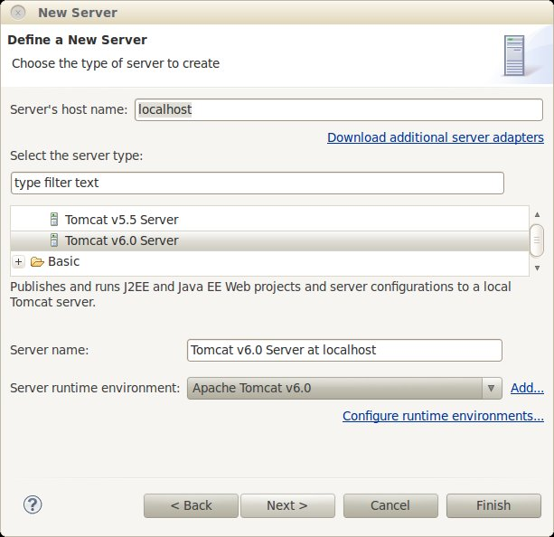

Ejercicios de configuración de Tomcat y aplicaciones web
Uso de Eclipse WTP (1 punto)
Vamos a desplegar la aplicación de comentarios de la sesión anterior a través de Eclipse WebTools. Para ello:
-
Crearemos una nueva instancia del servidor Tomcat: Con la opción File > New > Other > (carpeta Server) > Server crearemos una
instancia de Tomcat dentro de Eclipse. En el cuadro de diálogo que aparecerá simplemente tenemos que asegurarnos de elegir Tomcat v6.0, el resto de parámetros
los podemos dejar por defecto.

En el Project Explorer debería aparecer el nuevo servidor entre nuestros proyectos, en una carpeta llamada Servers. -
Crearemos un proyecto de Eclipse de tipo Dynamic Web Project:.
- En la primera pantalla del asistente le damos el nombre: comentarios y nos aseguramos de que como Target runtime tenga el Apache Tomcat 6.0.
- En la segunda pantalla no hace falta modificar nada, nos basta con una sola carpeta de código Java
- En la tercera pantalla tampoco es necesario cambiar nada. No obstante aquí podríamos cambiar el "contexto" de la aplicación, que formará parte de su URL y por defecto es igual al nombre del proyecto. Es decir, que para acceder a este proyecto habría que ir a http://localhost:8080/comentarios.
-
Copiamos el contenido de la aplicación en el proyecto de Eclipse:
- El HTML y el fichero JSP son páginas web y por tanto las copiaremos a WebContent
- Crearemos un package es.ua.jtech y dentro de él colocaremos las dos clases que hay en la plantilla dentro de la carpeta java.
- Copiamos el fichero WEB-INF/web.xml sobreescribiendo el mismo archivo del proyecto de Eclipse (WEB-INF en Eclipse está dentro de WebContent)
- Ejecutamos el proyecto desplegándolo en Tomcat: botón derecho sobre el proyecto y seleccionar Run as > Run on server. En la primera pantalla del asistente elegimos el servidor que hemos creado antes. En la segunda aparecerá la lista de proyectos que se van a desplegar en el servidor (solo aparecerá este). Pasados unos segundos aparecerá el navegador con la URL http://localhost:8080/comentarios abierta. Fijaos en que se muestra un mensaje HTTP 404 de "página no encontrada" porque la aplicación no tiene configurada una página principal. Esto lo solucionaremos en el siguiente ejercicio. Por el momento acceded manualmente a la página "comentarios.jsp" (la URL completa será http://localhost:8080/comentarios). Probad la aplicación insertando algún comentario y comprobando que se muestra correctamente.
Configuración a través del web.xml (0.5 puntos)
En el ejercicio anterior vimos que la aplicación carece de página "principal". Vamos a solucionar esto configurando la página comentarios.jsp como "principal". En el web.xml hay una sección llamada welcome-file-list que lista las páginas que el servidor debe buscar cuando se llame a la aplicación sin especificar la página a mostrar. Añadir comentarios.jsp a esta lista y comprobar que funciona adecuadamente, es decir que al llamar a http://localhost:8080/comentarios aparece dicha página. Será necesario rearrancar el servidor, ya que los cambios en el web.xml no se detectan mientras Tomcat está funcionando.
Configuración de fuentes de datos (1.5 puntos)
En las plantillas de la sesión están los archivos necesarios para crear un nuevo proyecto de Eclipse de la aplicación de comentarios pero ahora almacenando la información en una base de datos en lugar de en memoria
- Crea otro proyecto web dinámico llamado comentariosBD, y copia en el lugar adecuado la página comentarios.jsp y los fuentes Java de AddComentario, ComentariosDAO y FuenteDatos
- El fichero comentarios.sql contiene el script de creación de la base de datos. Desde una ventana
de terminal, cambia al directorio donde esté el script .sql y crea la base de datos escribiendo
mysql -u root -p < comentarios.sql (te pedirá el password: especialista)
- Crea un context.xml en la carpeta META-INF del proyecto y configura en él la conexión con la base de datos. Ayúdate del ejemplo de los apuntes
- La clase FuenteDatos es la que da acceso al DataSource. Rellena el código para que en el constructor de la clase se instancie el DataSource buscándolo con el API JNDI y se asigne a la variable estática ds.
- Copia el driver de MySQL al directorio lib de Tomcat
- Arranca el proyecto en Tomcat y comprueba que funciona correctamente. Con el MySQL Query Browser puedes comprobar si al insertar un comentario este aparece en la BD.
Configuración con el contexto (1 punto)
Vamos a configurar la aplicación a través de su contexto. Si has hecho el ejercicio anterior usa la aplicación "comentariosBD", si no usa la aplicación "comentarios". Lo más recomendable es crear la configuración en un fichero context.xml contenido en un directorio META-INF de nuestro proyecto.
- Definir un Valve para registrar únicamente los accesos a la aplicación de comentarios. Dichos accesos deben quedar registrados en el directorio accesos dentro del principal de Tomcat. El nombre del fichero de accesos debe comenzar por comentarios y tener extensión ".log". Probar a hacer peticiones para ver cómo quedan registrados los accesos.